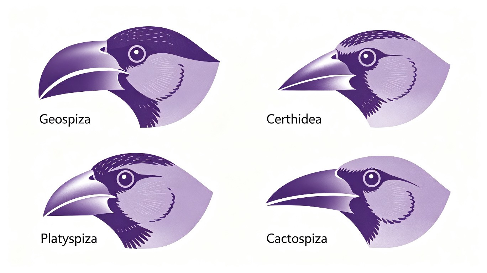

第一节 进化理论的发展（Evolution of Evolutionary Theory）
进化生物学研究生物随时间变化的规律和机制。进化理论经历了从拉马克的"用进废退"到达尔文自然选择，再到现代综合进化论和分子进化的漫长发展过程。Dobzhansky（1973）的名言："Nothing in biology makes sense except in the light of evolution"（生物学中只有置于进化之光的照耀下才有意义），至今仍是进化生物学的核心信条。
| 理论 | 代表人物 | 年代 | 核心观点 | 贡献 | 局限 |
|---|---|---|---|---|---|
| 拉马克学说 | Lamarck | 1809 | 用进废退、获得性遗传 | 首次提出进化思想 | 无遗传学基础，获得性不遗传 |
| 达尔文自然选择 | Darwin, Wallace | 1859 | 变异+遗传+选择+时间 | 提出自然选择机制 | 遗传机制不明（"融合遗传"错误） |
| 新达尔文主义 | Weismann | 1892 | 种质论：种质与体质分离 | 否定获得性遗传 | 过于强调自然选择（"泛选择主义"） |
| 综合进化论 | Dobzhansky, Mayr, Simpson, Huxley | 1937-1950 | 自然选择+遗传学+古生物学 | 统一进化理论框架 | 未充分解释分子水平中性变异 |
| 中性学说 | Kimura | 1968 | 多数分子变异为中性 | 解释分子水平进化 | 不能完全解释表型进化 |
| 间断平衡 | Eldredge & Gould | 1972 | 进化非匀速，有停滞和爆发 | 解释化石记录不连续 | 并非否定达尔文渐变论 |
一、拉马克学说（Lamarckism, 1809）
Jean-Baptiste Lamarck（1744-1829）在1809年出版的《动物哲学》（Philosophie Zoologique）中首次提出了系统的进化学说。他是历史上第一个提出完整进化理论的科学家，虽然他的机制后来被证明是错误的，但他的贡献在于首次建立了进化的系统框架。
拉马克学说的两个核心原则：
- 用进废退（Use and Disuse）：经常使用的器官发达，不使用的器官退化。如长颈鹿为了吃到高处的树叶，不断伸长脖子，脖子逐渐变长。
- 获得性遗传（Inheritance of Acquired Characteristics）：个体在生活过程中获得的性状可以遗传给后代。如铁匠的儿子出生时手臂就强壮。
拉马克学说的驳斥：Weismann（1892）的"割鼠尾实验"——连续22代切断小鼠尾巴，但后代尾巴长度不变。这个实验否定了"获得性遗传"。但现代分子生物学发现，表观遗传（epigenetic inheritance）——DNA甲基化、组蛋白修饰、非编码RNA等——确实可以在一定程度上跨代遗传，这为拉马克的某些思想提供了一定程度的现代解读。不过表观遗传的跨代传递通常仅持续2-3代，与拉马克所设想的永久性遗传不同。
二、达尔文自然选择学说（Darwin 1859）
Charles Darwin（1809-1882）在1859年出版的《物种起源》（On the Origin of Species）中提出了自然选择学说。Darwin乘坐HMS Beagle号（1831-1836）进行了为期5年的环球航行，其中加拉帕戈斯群岛（Galapagos Islands）的观察（特别是地雀喙的变异）对他进化思想的形成至关重要。Darwin的"共同祖先"（common descent）概念更是革命性的——它意味着所有生命形式都源自一个共同祖先，生命之树是一个统一的谱系。
自然选择学说的四个要素：
- 1. 过度繁殖（overproduction）：生物具有巨大的繁殖潜力，产生的后代数量远超环境容纳量。Darwin受到Malthus《人口论》（1798）的启发——人口以几何级数增长，食物以算术级数增长，必然导致竞争。
- 2. 遗传变异（variation）：同一物种内个体之间存在可遗传的变异。Darwin注意到家养动物（如鸽子）的变异极为丰富，说明自然种群中也有类似变异。
- 3. 生存斗争（struggle for existence）：有限的资源导致个体间竞争，只有部分个体能存活并繁殖。Darwin使用"struggle"一词是广义的——包括竞争、捕食、寄生和对环境胁迫的耐受。
- 4. 适者生存（survival of the fittest）：具有有利变异的个体更可能存活和繁殖，这些有利变异在种群中积累。注意"适者生存"（survival of the fittest）一词是Spencer创造的，Darwin后来采纳了它。
Darwin自然选择学说面临的困境：
- 遗传机制不明：Darwin相信"融合遗传"（blending inheritance）——父母性状混合遗传给后代，如红+白=粉。但Fleeming Jenkin（1867）指出，融合遗传下，有利变异会在杂交中"稀释"掉，无法维持。Darwin无法回答这个问题。
- Mendel的"拯救"：Mendel（1866）的颗粒遗传（particulate inheritance）完美解决了Jenkin的困境——基因是离散的"颗粒"，不会在杂交中稀释。但Darwin从未读过Mendel的论文。
- Kelvin的地球年龄问题：Lord Kelvin根据热力学计算，认为地球年龄仅约2000-4000万年，远不足以让Darwin的缓慢进化过程发生。后来发现放射性元素衰变提供持续热源，地球实际年龄约46亿年，自然选择有足够的时间。

三、新达尔文主义（Neo-Darwinism）——Weismann种质论
August Weismann（1834-1914）在1892年提出了种质论（Germ Plasm Theory），奠定了新达尔文主义（Neo-Darwinism）的基础。Weismann否定了拉马克的获得性遗传，强调自然选择是进化的唯一机制。
- 种质与体质分离：Weismann提出多细胞生物体由两类细胞组成：种质（germ plasm）——生殖细胞（精子和卵子），负责遗传信息的传递；体质（soma）——体细胞，构成身体的其他部分，在个体死亡后消失。种质是连续的、不朽的；体质是暂时的、可弃的。这一概念是现代"Weismann屏障"（Weismann barrier）的起源——遗传信息从种质流向体质，但不能反向。
- Weismann屏障（Weismann Barrier）：遗传信息只能从种质（生殖细胞）流向体质（体细胞），不能反向。体细胞在生活过程中获得的变化不能传递给生殖细胞。这一概念是现代分子生物学中心法则（DNA→RNA→蛋白质）在进化层面的体现。
- 割鼠尾实验：连续22代切断小鼠尾巴，后代尾巴长度不变。这是否定获得性遗传的经典实验。
四、综合进化论（Modern Synthesis）
综合进化论（Modern Synthesis/Modern Evolutionary Synthesis）是20世纪30-50年代由多位科学家共同完成的进化理论整合，将Darwin的自然选择与Mendel的遗传学、种群遗传学和古生物学等统一起来。这一理论整合是20世纪生物学最重要的成就之一。
综合进化论的核心人物与贡献：
- Dobzhansky（1900-1975）：《遗传学与物种起源》（Genetics and the Origin of Species, 1937）。将种群遗传学（Wright, Fisher, Haldane的理论）应用于自然种群，用实验证明了自然选择。Dobzhansky的果蝇实验（Drosophila pseudoobscura）直接观察到了自然选择导致的染色体倒位频率变化。他是连接种群遗传学和野外生物学的关键人物。
- Mayr（1904-2005）：《系统学与物种起源》（Systematics and the Origin of Species, 1942）。提出了生物学种概念（Biological Species Concept），强调地理隔离在物种形成中的核心作用。Mayr是"异域成种"的最强倡导者。
- Simpson（1902-1984）：《进化的节奏与模式》（Tempo and Mode in Evolution, 1944）。将古生物学纳入综合进化论框架，解释了化石记录中的宏观进化模式。Simpson证明古生物学证据与自然选择学说一致。
- Huxley（1887-1975）：《进化：现代综合》（Evolution: The Modern Synthesis, 1942）。首次使用"综合进化论"这一术语，系统总结了各学科的综合成果。Huxley是Julian Huxley，Thomas Henry Huxley（"达尔文的斗牛犬"）的孙子。
- Fisher, Haldane, Wright：种群遗传学三大奠基人。Fisher（1930）《自然选择的遗传理论》、Haldane（1932）《进化的原因》、Wright（1931）提出了适应性地形（adaptive landscape）和遗传漂变（genetic drift）概念。三人的数学理论为综合进化论提供了坚实的定量基础。
综合进化论的核心观点：①进化是种群中基因频率的变化（种群是进化单位，而非个体）；②自然选择是最重要的进化机制（但非唯一）；③微进化（microevolution）→宏进化（macroevolution），即小尺度的遗传变化积累可导致大尺度的进化转变；④进化是渐进的（gradualism）。
五、中性学说（Neutral Theory of Molecular Evolution）
中性学说由日本遗传学家Kimura Motoo（木村资生, 1968）提出。King & Jukes（1969）独立发表了类似观点（"非达尔文主义进化"Non-Darwinian Evolution）。中性学说是对综合进化论的重要补充，而非否定。
- 核心观点：①分子水平上，大多数进化变化不是由自然选择驱动的，而是由选择上呈中性的突变通过遗传漂变（genetic drift）随机固定；②功能越重要的分子，进化速率越慢（因为选择约束更强，有害突变被清除）；③不同物种中同一蛋白质的氨基酸替换率大致恒定——这就是分子钟（molecular clock）的概念。
- 分子钟（Molecular Clock）：Zuckerkandl & Pauling（1962, 1965）在研究血红蛋白时首先发现。同一种蛋白质的氨基酸替换率在不同谱系中大致恒定，可以像时钟一样用来估算物种分化时间。"分子钟"是中性学说的直接推论，极大推动了分子系统发育学的发展。
- 选择论与中性论的争论：自然选择论者认为几乎所有的进化变化都是自然选择的结果；中性论者认为大多数分子变化是中性的。现代共识：两者都重要——自然选择主导表型进化（形态、生理、行为），中性进化主导分子水平变化（同义替换、非编码区）。即"表型层面选择主导，分子层面中性主导"的近似共识。
六、间断平衡（Punctuated Equilibrium）
间断平衡学说由Eldredge & Gould（1972）在《间断平衡：对系统渐变论的替代方案》一文中提出。该学说解释了化石记录中物种"长期静止（stasis）—短期快速变化—再长期静止"的模式。
- 核心观点：①物种在大多数时间内处于停滞（stasis）状态，形态变化很小；②进化变化集中在快速成种事件中（地质时间尺度上的"快速"，实际可能持续数万至数十万年）；③成种后新物种保持稳定。
- 与达尔文渐变论的关系：达尔文认为进化是"缓慢的、渐进的、连续的"。间断平衡并不否定自然选择，而是否定进化的匀速性。Gould强调间断平衡"补充"而非"替代"达尔文主义。两种观点并不矛盾——它们分别描述了进化在时间尺度上的不同模式。
- 化石记录中的证据：许多化石谱系显示"停滞"模式——如三叶虫（Phacops rana）在约800万年内形态几乎不变。这种模式在化石记录中极为常见，Eldredge和Gould认为它不是化石记录不完整造成的假象，而是真实的进化模式。
七、进化的证据
进化的证据来自多个独立学科，它们相互印证，构成了进化论最坚实的证据基础：
- 化石证据（fossil evidence）：化石记录显示了生物随时间的变化。重要的过渡化石：始祖鸟（Archaeopteryx，1861年发现，兼具爬行动物和鸟类特征——牙齿、长尾骨、羽毛）、提塔利克鱼（Tiktaalik，2004年发现，鱼到四足动物的过渡化石，具有鳍和腕骨中间形态）、南方古猿阿法种（Australopithecus afarensis "Lucy"，1974年发现，直立行走但脑容量小）。
- 比较解剖学证据：同源器官（homologous organs）——不同物种中结构相似但功能不同的器官，表明共同祖先。如脊椎动物的前肢（人手臂、蝙蝠翼、鲸鳍、马前腿）。同功器官（analogous organs）——结构不同但功能相似的器官，是趋同进化的结果，不表明近亲缘关系。如鸟翼和昆虫翅膀、鲨鱼（软骨鱼）和海豚（哺乳动物）的流线型体型。竞赛中需要准确区分同源（homology）和同功（analogy）。
- 胚胎学证据：胚胎重演律（Biogenetic Law/Recapitulation Theory）——Haeckel（1866）提出"个体发育重演系统发育"（Ontogeny recapitulates phylogeny）。脊椎动物胚胎早期阶段（咽裂、脊索、尾）高度相似，表明共同祖先。但Haeckel的"重演律"过于简化——现代发育生物学（evo-devo）已经证明，胚胎发育并非严格重演进化历史，而是共同发育程序（如Hox基因）在不同物种中的保守性导致了相似性。
- 分子生物学证据：所有生物使用相同的遗传密码（DNA→RNA→蛋白质）、相同的遗传物质（DNA）、相同的能量货币（ATP）。DNA序列相似性反映亲缘关系——人类与黑猩猩DNA序列相似度约98.8%，与小鼠约85%，与果蝇约60%。保守基因（如组蛋白H4、rRNA基因）在各种生物中高度保守，反映了它们的基本功能重要性。
- 生物地理学证据：物种的地理分布反映进化历史。如：有袋类哺乳动物主要分布在澳大利亚和南美洲（过去连接在冈瓦纳古陆），证明了大陆漂移和生物地理隔离的共同影响。海洋岛屿的特有物种（如加拉帕戈斯群岛、夏威夷群岛）是适应辐射的经典案例。
第一节 进化理论的发展 — 必背考点总结
- 拉马克学说：1809《动物哲学》。用进废退+获得性遗传。Weismann割鼠尾实验（1892）否定。表观遗传有限度支持。
- 达尔文自然选择：1859《物种起源》。四要素：过度繁殖（Malthus）、遗传变异、生存斗争、适者生存（Spencer）。Beagle号航行（1831-1836）。Wallace独立发现（1858林奈学会）。困境：融合遗传（Jenkin 1867）→Mendel颗粒遗传拯救。
- 新达尔文主义：Weismann（1892）种质论。种质（生殖细胞）vs体质（体细胞）。Weismann屏障：信息种质→体质不可逆。
- 综合进化论：Dobzhansky（1937/果蝇）、Mayr（1942/物种概念）、Simpson（1944/古生物）、Huxley（1942/命名）。种群遗传学：Fisher/Haldane/Wright。Hardy-Weinberg平衡（1908）：p²+2pq+q²=1。种群是进化单位，自然选择主导，渐进。
- 中性学说：Kimura（1968）。分子水平大多数变化是中性突变通过漂变固定。分子钟（Zuckerkandl & Pauling）。近中性理论（Ohta 1973）。表型选择主导，分子中性主导。
- 间断平衡：Eldredge & Gould（1972）。停滞-快速变化-停滞。不否定自然选择，否定匀速性。
- 进化证据：化石（始祖鸟/提塔利克鱼/Lucy）、比较解剖（同源vs同功）、胚胎学（Haeckel重演律/evo-devo）、分子生物学（遗传密码统一/DNA相似性）、生物地理（有袋类/冈瓦纳）。退化器官。
高中教材衔接 · 课标对应
本章在人教版高中生物教材中的对应：
- 选择性必修3《生物技术与工程》第3章"基因工程"——分子水平上的进化（基因突变、基因重组、染色体变异是进化的原材料）。基因工程是分子生物学在进化领域的应用。
- 选择性必修2《生物与环境》第1-5章"种群-群落-生态系统"——种群是进化的基本单位（种群基因频率的定向改变即生物进化）。自然选择决定进化的方向。现代生物进化理论的核心：以种群为基本单位，以自然选择为核心。
- 必修2《遗传与进化》第7章"现代生物进化理论"——主要内容：①拉马克的进化学说（1809《动物哲学》，用进废退+获得性遗传）；②达尔文的自然选择学说（1859《物种起源》，过度繁殖+生存斗争+遗传变异+适者生存）；③现代生物进化理论的发展（自然选择学说+种群遗传学+中性学说）。
- 必修2第7章第1节"现代生物进化理论的由来"——拉马克、达尔文（自然选择四大要素）、《物种起源》出版、林奈学会Wallace独立提出自然选择。
- 必修2第7章第2节"现代生物进化理论的主要内容"——种群是进化的基本单位（基因频率改变）、突变和基因重组产生进化的原材料、自然选择决定进化的方向、隔离导致新物种形成、生物进化的基本历程（从原核→真核单细胞→多细胞→陆生→高等植物/动物）。
2025 / 2026 联赛 · 初赛真题链接
本章重难点深度解析
重难点一：拉马克 vs 达尔文 vs 综合进化论的范式比较
- 拉马克（Lamarck, 1809《动物哲学》）：①用进废退（use and disuse）——经常使用的器官发达，不使用的退化（如长颈鹿的脖子是用进化的结果）；②获得性遗传（inheritance of acquired characters）——后天获得的性状可以遗传给后代。拉马克是第一个提出系统进化学说的科学家，但其学说缺乏遗传学基础，核心观点被Weismann的"种质论"实验否定。
- Weismann的种质论（germ plasm theory, 1892）：August Weismann（1889-1892）提出"种质"（germ plasm，生殖细胞）和"体质"（soma，体细胞）的区别。他认为，信息只能从种质流向体质，不能反向流动（即体质获得的变化不能传递给种质）——这就是著名的"魏斯曼屏障"（Weismann barrier）。Weismann的经典实验——连续22代剪断小鼠尾巴，子代尾巴长度不变——以此否定拉马克的获得性遗传（虽然这一实验的设计有缺陷，结果也不能严格否定拉马克学说，但成为了反对获得性遗传的经典案例）。
- 达尔文（Darwin, 1859《物种起源》）：自然选择学说四大要素：①过度繁殖（over-reproduction）——任何物种都有产生大量后代的潜力（受Malthus《人口论》1798影响）；②生存斗争（struggle for existence）——由于资源有限，过度繁殖导致种内和种间斗争；③遗传变异（heritable variation）——种群中个体存在可遗传的变异；④适者生存（survival of the fittest, Spencer 1864用语）——具有有利变异的个体在生存斗争中更可能存活并繁殖。自然选择是定向的（directed），变异是随机的（random）——这一区分是达尔文与拉马克的关键区别。
- 达尔文学说的遗传学困境与Mendel的拯救：Darwin提出自然选择时，遗传机制尚未明了。Darwin倾向"融合遗传"（blending inheritance）——父母双方性状像液体一样混合。但Fleeming Jenkin（1867）指出，如果融合遗传，新出现的优势变异会在群体中迅速被稀释，难以保留，自然选择就无法工作。Mendel（1866）的颗粒遗传（particulate inheritance）则解决了这一问题——基因（颗粒）在杂交中保持完整，可以以离散形式遗传。Mendel的工作在1900年被重新发现（de Vries、Correns、Tschermak），与Darwin的选择学说融合，催生了现代综合论。
重难点二：现代综合论（Modern Synthesis）的诞生
- "现代综合论四剑客"：①Dobzhansky（1900-1975）——1937年《遗传学与物种起源》（Genetics and the Origin of Species）——将种群遗传学与自然选择融合，用果蝇实验证明自然选择可以改变种群中的基因频率；②Mayr（1904-2005）——1942年《系统发育与物种概念》提出生物学物种概念（biological species concept），强调生殖隔离在物种形成中的作用；1963年《动物物种与进化》系统化了异域物种形成理论；③Simpson（1902-1984）——1944年《进化的节奏与模式》（Tempo and Mode in Evolution）——古生物学家，将达尔文主义与古生物学融合；④Huxley（1887-1975）——1942年《进化：现代综合》（Evolution: The Modern Synthesis）——综合论命名的关键人物。
- "种群遗传学三杰"（Fisher、Haldane、Wright）：将数学与统计学引入进化生物学，建立种群遗传学的数学基础：①R.A. Fisher（1890-1962）——1930年《自然选择的遗传理论》，建立自然选择的统计基础；②J.B.S. Haldane（1892-1964）——1924-1932年系列论文，应用数学方法研究自然选择对基因频率的影响；③Sewall Wright（1889-1988）——1931年提出"适应景观"（adaptive landscape）模型，强调漂变在小种群中的作用；提出"漂移-漂变"（shifting balance theory）理论。三人的理论最终被融合为完整的种群遗传学框架。
- Hardy-Weinberg定律（1908）：在理想群体（无限大、随机交配、无突变、无选择、无迁移）中，基因频率和基因型频率保持恒定：(p+q)² = p² + 2pq + q² = 1。其中p为A等位基因频率，q为a等位基因频率。这一定律由G.H. Hardy（英国数学家）和Wilhelm Weinberg（德国医生）于1908年独立提出。H-W平衡是零模型（null model）——判断种群是否进化的参照基准。如果观察到的基因型频率与H-W预期不符，则种群正在经历进化。H-W定律的五个前提缺一不可：①无限大群体（否则漂变）；②随机交配（否则性选择、近交）；③无突变（否则基因频率改变）；④无选择（否则适合度差异）；⑤无迁移（否则基因流）。
- 自然选择的类型：①定向选择（directional selection）——选择极端表型（如长颈鹿的长颈）；②稳定选择（stabilizing selection）——选择中间表型，淘汰极端（如人类新生儿出生体重）；③分裂选择（disruptive/diversifying selection）——选择两端表型，淘汰中间（如非洲慈鲷的两种食性）；④平衡选择（balancing selection）——维持多种等位基因（如杂合子优势的镰刀型贫血与疟疾抗性）。
重难点三：中性进化理论（Neutral Theory）与分子钟
- Kimura的中性进化理论（Motoo Kimura, 1968, 1983）：Kimura提出，在分子水平上，大多数突变是中性的（既无利也无害），这些中性突变在种群中的命运由随机遗传漂变（genetic drift）决定，而非自然选择。这是与达尔文表型进化的重大区别。Kimura理论的核心数据：①对蛋白质多态性的估算远高于自然选择所能维持的数量；②DNA序列的进化速率大致恒定（"分子钟"），与表型进化的不规则性形成对比。Kimura因中性理论获1991年京都奖。
- 近中性理论（Nearly Neutral Theory, Ohta 1973）：Tomoko Ohta扩展了Kimura的中性理论，认为大多数突变是"近中性"——即选择系数s很小，s≤1/2Ne（Ne为有效种群大小）。在这种情况下，漂变和选择共同决定突变的命运。在小种群中，弱有害突变可能因漂变而固定（这解释了小种群中分子进化速率的加快）。近中性理论是现代分子进化的主导理论。
- 分子钟（Molecular Clock）：Zuckerkandl & Pauling（1962, 1965）首次提出分子钟概念：不同物种的同源蛋白质（如血红蛋白、细胞色素c）氨基酸替换速率大致恒定，可以此估算物种分歧时间。分子钟的"摆动"问题（rate variation）后来通过"松弛分子钟"（relaxed clock, Thorne et al. 1998）解决。分子钟的应用：①人类与黑猩猩分歧约600-700万年前（分子证据与化石一致）；②哺乳动物与鸟类分歧约3亿年前；③有胎盘哺乳动物的目级分化多在白垩纪末恐龙灭绝前后（~6500万年前）。
- dN/dS（Ka/Ks）选择压分析：dN（Ka）= 非同义替换率（改变氨基酸）；dS（Ks）= 同义替换率（不改变氨基酸，受选择约束小）。ω = dN/dS（或Ka/Ks）作为选择压力的指标：ω < 1 纯化选择（negative selection，淘汰有害突变，常见于功能重要基因）；ω = 1 中性进化（漂变固定）；ω > 1 正选择（diversifying selection，适应性进化，如免疫系统MHC基因、精子识别基因、HIV病毒表面蛋白）。这是现代进化基因组学的核心方法。
重难点四：间断平衡论（Punctuated Equilibrium）vs 渐变论（Gradualism）
- 间断平衡（Eldredge & Gould, 1972）：化石记录显示，物种在大部分时间保持稳定（停滞stasis），只在相对短的时间（地质学尺度上）内发生快速变化形成新物种。间断平衡的"间断"指形态上的突然变化（在地质时间尺度上是短时事件），并非完全否认渐变。间断平衡的机制：①小种群隔离（异域物种形成）——快速形态变化；②发育调控基因（Hox、PAX、SOX）的突变导致形态快速变化；③奠基者效应（founder effect）——小种群中快速漂变。
- 渐变论（Gradualism, Darwin）：物种通过缓慢、连续的变化形成，需要漫长的地质时间。渐变论预测化石记录应呈现连续的过渡形态。
- 间断平衡与渐变论的现代综合：现代综合进化论已不再将两者视为对立。在分子水平上，渐变是常态；但在表型和物种形成上，间断（短时快速变化）是常见模式。Erwin et al.（1987）提出"间断渐变"（punctuated gradualism）作为中间模型。Gould（2002，The Structure of Evolutionary Theory）综述了间断平衡的完整理论框架。
- "寒武纪大爆发"作为间断平衡的证据：寒武纪早期（约5.4-5.2亿年前，地质学上是"瞬间"）出现了几乎所有动物门类的祖先——这一"大爆发"现象被Gould（1989《奇妙的生命》）作为间断平衡的经典证据。寒武纪爆发前（埃迪卡拉纪）的动物形态简单（埃迪卡拉生物群），寒武纪后突然出现复杂的形态多样性。但近年研究（如分子钟分析）表明，多数门类的分化实际上始于寒武纪之前的成冰纪，化石保存的"突然"可能是真实分化的延迟反映。
重难点五：进化的五大证据体系（化石/解剖/胚胎/分子/生物地理）
- 化石证据：①始祖鸟（Archaeopteryx）——1861年发现于德国巴伐利亚索伦霍芬石灰岩（约1.5亿年前晚侏罗世），兼具爬行动物（牙齿、长尾骨、爪）和鸟类（有羽毛、叉骨）特征，是爬行动物到鸟类的过渡化石；②提塔利克鱼（Tiktaalik roseae）——2004年由Neil Shubin团队在加拿大北极地区发现（约3.75亿年前晚泥盆世），具有鱼类（鳃、鳍、鳞）和四足动物（颈、肋骨、腕骨、肺）的混合特征，是鱼类登陆的过渡化石；③露西（Lucy, Australopithecus afarensis）——1974年Donald Johanson在埃塞俄比亚发现（约320万年前），是已知最完整的早期人类化石，骨盆和腿骨显示直立行走（bipedalism），但脑容量小（约400-500 cc，相当于黑猩猩）。
- 同源 vs 同功：同源器官（homologous organs）——不同物种中结构相似但功能不同的器官，反映共同祖先。如脊椎动物的前肢（人手臂、蝙蝠翼、鲸鳍、马前腿、鸟翅），骨骼结构同源（肱骨、桡骨、尺骨、腕骨、掌骨、指骨）。同功器官（analogous organs）——结构不同但功能相似的器官，反映趋同进化（convergent evolution）。如鸟翼（羽毛、翼骨）和昆虫翅膀（角质膜）、鲨鱼（软骨鱼）和海豚（哺乳动物）的流线型体型。竞赛必考同源vs同功的辨析。
- 胚胎学证据：Haeckel的"重演律"（recapitulation theory, 1866）——"个体发育重演系统发育"（ontogeny recapitulates phylogeny）。脊椎动物胚胎早期阶段（咽裂、脊索、尾）高度相似，支持共同祖先。现代Evo-Devo（进化发育生物学）的修正——胚胎相似性不是"重演"，而是Hox基因等发育程序的保守性在不同物种中保留了共同的早期发育过程。von Baer（1828）的"胚胎相似性法则"比Haeckel的重演律更准确。
- 分子证据：①遗传密码（genetic code）的普遍性——所有生物使用同一套三联体密码子（除少数线粒体和支原体的微调），表明共同起源；②DNA序列相似性与亲缘关系——人类与黑猩猩DNA序列相似度约98.8%，与小鼠约85%，与果蝇约60%；③保守基因——组蛋白H4、rRNA基因、细胞色素c等在所有生物中高度保守（组蛋白H4在牛和豌豆之间仅差2个氨基酸）；④内共生学说的分子证据——线粒体DNA与α-变形菌（α-proteobacteria）相似，叶绿体DNA与蓝藻相似，强烈支持内共生起源（Margulis 1970）。
- 生物地理证据与冈瓦纳古陆：①有袋类（Marsupialia）的分布——现存有袋类主要在澳大利亚和南美洲（少数在北美），与有胎盘类的辐射分布形成鲜明对比。化石记录显示有袋类在白垩纪时几乎全球分布（北美洲也有），但在胎盘类出现后逐渐被取代。澳大利亚因在6500万年前与其他大陆分离（南美洲在~3000万年前分离），有袋类得以保留和辐射，形成独特的澳大利亚动物区系。②达尔文雀（Galápagos finches）——加拉帕戈斯群岛的14种地雀源于共同祖先，是适应辐射的经典案例。Peter Grant夫妇40年研究记录了自然选择对喙形的实际作用。③海洋岛屿的特有物种——夏威夷群岛的果蝇（~1000种）、蜜旋木雀（honeycreeper，~50种），马达加斯加的狐猴（lemur，~100种），都是适应辐射的经典案例。
教师讲义 · 演化生物学与生物信息学 2026.7 精要
【拉马克进化论核心观点深度补充】
- 拉马克(Jean-Baptiste Lamarck, 1744-1829)：法国自然科学家，1809年《动物哲学》提出两大核心观点：①用进废退（Use and Disuse）：生物体在生活过程中，器官因经常使用而发达，因不经常使用而退化（如长颈鹿的脖子、鼹鼠的眼睛）；②获得性遗传（Inheritance of Acquired Characters）：后天获得的性状可以遗传给后代（如水毛茛的水中叶与水上叶的形态差异）。
- Weismann 的种质论否证：August Weismann（1892）提出种质学说（germ plasm theory），认为生物体由种质（生殖细胞）和体质（体细胞）组成，种质世代相传、不受体质影响，体质的变化不能传递给种质。Weismann 通过连续 22 代剪断小鼠尾巴的实验（每代都剪尾巴，到第 22 代小鼠仍生出有尾后代），直接否证了拉马克的获得性遗传。
- 拉马克的现代部分复兴：表观遗传学（epigenetics）发现 DNA 序列不变的情况下，DNA 甲基化、组蛋白修饰等可改变基因表达，且部分修饰可通过减数分裂传递 1-2 代。这在某种程度上为"获得性遗传"提供了有限的现代证据——但 Weismann 屏障的基本框架（生殖细胞相对独立）仍然成立。
达尔文进化学说（Darwin's Theory of Evolution）的五大学说：
- ①生物是进化的（Evolution）：现有物种由其他物种演化而来。这是核心观点（"transmutation"），当时社会普遍接受创世论和物种不变论，达尔文提出此观点是革命性的。
- ②共同祖先学说（Common Ancestry）：所有生物来自共同祖先。分子生物学证实了这一点——所有生物共用同一套遗传密码（64 个密码子，61 个编码氨基酸，3 个终止；线粒体有少量例外）。这与拉马克的"多次创造"和居维叶的"灾变论"形成鲜明对比。
- ③物种增殖学说（Speciation）：物种通过分歧演化（splitting / cladogenesis）产生新物种，而非线性渐变。演化树（Tree of Life）是分支性的，不是阶梯性的。
- ④渐变性学说（Gradualism）：进化是缓慢、渐进的，通过微小变异的积累完成。反对跳跃式（saltation）。但间断平衡论（1972）对此提出修正：进化在地质时间尺度上可能是停滞-快速交替的。
- ⑤自然选择学说（Natural Selection）：核心机制。逻辑链：遗传变异 + 过度繁殖（Malthus 人口论启发）→ 生存斗争 → 自然选择 → 适者生存。人工选择（artificial selection）是人类对动物植物的定向选育，是自然选择的类比。
现代综合论（Modern Synthesis, 1937-1947）：
由 Dobzhansky、Mayr、Simpson、Huxley 四人将孟德尔遗传学与达尔文自然选择整合，是 20 世纪进化生物学的正统理论。
- Dobzhansky 1937《遗传学与物种起源》——提出"隔离机制是物种形成的关键"
- Mayr 1942《系统学与物种起源》——提出生物学物种概念（biological species concept）
- Simpson 1944《进化的节奏与模式》——古生物学与综合论的整合
- Huxley 1942《进化：现代综合论》——正式命名"Modern Synthesis"
- 种群遗传学三剑客：R.A. Fisher、J.B.S. Haldane、Sewall Wright 建立数学模型（费舍尔的自然选择基本定理、霍尔丹的突变负荷、赖特的遗传漂变和近交系数 F）
中性学说（Neutral Theory）的核心论点：
- 突变大多是"中性"的：它不影响核酸和蛋白质的功能，对生物个体的生存既无害处，也无好处。Kimura（1968）统计表明，分子水平上大多数突变是中性或近中性的。
- "中性突变"通过随机"遗传漂变"在群体里固定下来：在分子水平进化上，自然选择不起主导作用。例如，许多不同物种的功能相同的蛋白质（血红蛋白、细胞色素 c、核酸酶、胰岛素、免疫球蛋白、血纤肽等），其氨基酸组成有显著差异——这些差异大多是中性的，由漂变固定。
- 进化速率由中性突变速率决定：即由核苷酸和氨基酸置换率决定，对所有生物几乎都是恒定的——这就是"分子钟"的理论基础（Zuckerkandl & Pauling 1965）。
- 中性理论 vs 达尔文理论：二者并不完全对立，但侧重点不同：表型进化由自然选择主导；分子进化由中性突变+漂变主导。Ohta（1973）的"近中性理论"（Nearly Neutral Theory）修正了 Kimura 严格中性，提出轻微有害/轻微有利突变也受群体大小影响。
间断平衡论（Punctuated Equilibrium, Eldredge & Gould 1972）：
认为生物进化是不连续的，由短期急速进化（speciation event 期间的形态快速变化）和长期相对静止（stasis，谱系在数百万年内形态几乎不变）的时期相间组成。能够合理解释化石记录中的"突然出现、长期稳定、突然灭绝"模式（如寒武纪大爆发、埃迪卡拉大爆发、三叠纪大爆发）。
新灾变论（Neocatastrophism, Schindewolf 1954）：
德国古生物学家 Schindewolf 1954 年提出。灾变论由居维叶（Cuvier, 1817）首创——认为地球经历过多次周期性巨大灾变，巴黎盆地白垩纪地层中大量灭绝化石是大灾变的结局。新灾变论与古生物学的"大灭绝事件"研究结合（如 K-Pg 灭绝 6600 万年前导致恐龙灭绝，证据是 Iridium 富集层和希克苏鲁伯陨石坑），认为大灭绝事件是进化史的重要驱动力。
进化的证据（Evolution Evidence）深度整理：
- ① 化石证据（Fossil Evidence）：
- 始祖鸟（Archaeopteryx, 1861年发现于德国 Solnhofen）：兼具爬行动物（牙齿、长尾骨、爪）和鸟类（羽毛、叉骨）特征。共 12 件标本，是鸟类起源于爬行类的关键证据。
- 提塔利克鱼（Tiktaalik roseae, 2004年发现于加拿大 Ellesmere 岛）：泥盆纪晚期（~3.75 亿年前）化石，鱼到四足动物的过渡类型——具有鱼的鳍（鳞+鳍条）和四足动物的颈、腕骨、肋骨、肺。
- 露西（Lucy, Australopithecus afarensis, 1974年发现于埃塞俄比亚 Hadar）：距今 320 万年。直立行走证据（骨盆、股骨角度），但脑容量仅约 400 mL（现代人约 1400 mL）。
- 种子蕨（Pteridosperm）：介于蕨类与裸子植物之间的过渡化石。
- 牙形刺（Conodont）：一类已灭绝的牙形动物，演化研究的重要化石。
- ② 比较解剖学证据（Comparative Anatomy）：
- 同源器官（homologous organs）：起源相同、结构相似但功能不同的器官。表明共同祖先。如脊椎动物的前肢——人手臂（抓握）、鲸鳍（游泳）、蝙蝠翼（飞行）、马前腿（奔跑）——骨骼结构高度同源。
- 同功器官（analogous organs）：起源不同但功能相似的器官。是趋同进化的结果，不表明亲缘关系。如鸟翼 vs 昆虫翅、鲨鱼 vs 海豚的流线型体型。
- 痕迹器官（vestigial organs）：祖先有用但已退化的结构。人类：阑尾（盲肠的遗迹）、尾骨（coccyx）、智齿（原始饮食需要磨牙）、耳廓肌（多数人不能动耳）、掌长肌（约 14% 的人缺失）、体毛+立毛肌（"鸡皮疙瘩"）。鲸类：骨盆残余骨（后肢遗迹）。蟒蛇：后肢骨残余。鸵鸟：翅膀退化不能飞但仍保留。
- ③ 胚胎学证据（Embryological Evidence）：
- 胚胎重演律（Biogenetic Law）：Haeckel 1866 提出"个体发育重演系统发育"（Ontogeny recapitulates phylogeny）。脊椎动物早期胚胎（咽裂、脊索、尾）高度相似，反映共同祖先。
- 现代修正（evo-devo, evolutionary developmental biology）：胚胎相似性源于 Hox 基因等发育程序的保守性，而非简单重演。Hox 基因沿身体前后轴（头尾轴）控制体节分化，Hox 基因突变可导致严重发育畸形（异位表达可让果蝇长出腿在触角位置——Antennapedia 突变）。
- ④ 分子生物学证据（Molecular Evidence）：
- 所有生物共用同一套遗传密码（DNA→RNA→蛋白质），共用 ATP、NAD、辅酶 A 等生物分子——证明共同祖先。
- DNA 序列相似性反映亲缘关系：人 vs 黑猩猩 ~98.8%、人 vs 小鼠 ~85%、人 vs 果蝇 ~60%、人 vs 酵母 ~30%、人 vs 大肠杆菌 ~10%。
- 保守基因在不同物种中高度保守：如组蛋白 H4（脊椎动物与豌豆的 H4 氨基酸序列只有 2 个差异）、细胞色素 c（人和黑猩猩相同，人和酵母 38/104 位置不同）、rRNA 基因（16S rRNA 用于细菌分类，18S rRNA 用于真核分类）。
- 分子钟（Molecular Clock）：DNA/蛋白质序列的进化速率相对恒定，可用于推断物种分歧时间。重要的校正节点：人-黑猩猩 6-7 Mya、人-恒河猴 25-30 Mya、人-鼠 75-80 Mya。
- ⑤ 生物地理学证据（Biogeographical Evidence）：
- 达尔文加拉帕戈斯群岛地雀（Darwin's finches）：13 种地雀源自共同祖先，喙形适应不同食物（种子、昆虫、仙人掌），是适应辐射的经典案例。
- 有袋类（Marsupialia）地理分布：主要在澳大利亚（约 200 种）和南美洲（约 70 种）——澳大利亚与南美洲曾是冈瓦纳古陆的一部分，白垩纪末（约 6600 万年前）开始分裂。
- 新西兰无蛇（kakapo 鹦鹉、几维鸟 kiwi 等不会飞行的特有鸟类）——地理隔离导致独特进化。
- 夏威夷蜜旋木雀（Hawaiian honeycreepers）：类似达尔文地雀，但因岛屿隔离形成更多物种（已描述 50+ 种，部分已灭绝）。
2026 联赛·江苏初赛真题精选（基于讲义原文整理）：
- （2026 江苏）分子演化"中性学说"挑战了传统的进化观点。关于该学说认为的生物大分子进化的主导力量，请判断下列选项的正确或错误。
- A. 进化速率由中性突变速率决定，几乎所有生物恒定
- B. 中性突变的演化是随机漂变的过程
- C. 中性理论认为不存在有害突变
- D. 严格中性理论可以解释蛋白演化速率和物种群体大小存在关联这一现象
答案：A 正确、B 正确、C 错误、D 错误。C 错：中性学说并不否认有害突变的存在，只是不把有害突变的清除视为进化主导——有害突变由负选择清除（背景选择 background selection），中性突变由漂变固定；D 错：严格中性理论预测进化速率与群体大小无关（因为漂变速率不依赖群体大小，只依赖群体数量 Nμ），能解释蛋白演化速率与群体大小关联的是 Ohta 的"近中性理论"（Nearly Neutral Theory）。
- （2022 联赛）化石记录中很多物种长期保持形态不变，仅在地质历史短暂时段内快速演化。这一现象最可能支持：
- A. 渐进式演化 B. 间断平衡学说 C. 中性理论 D. 突变理论
答案：B。"停滞-快速变化"是间断平衡论的核心模式。渐进式演化（A）预测连续变化，中性理论（C）针对分子水平而非形态，突变理论（D）只讨论突变产生不涉及速率。
- （2019 联赛）下列能作为生物进化最直接证据的是：
- A. 化石 B. 胚胎发育 C. 分子序列 D. 同源器官
答案：A。化石是过去生命的直接实体遗迹，是最直接证据。其他三类是间接证据（同源器官、分子序列、胚胎相似性）。
- （2019 联赛）人/黑猩猩 ~6 Mya 分歧，人/恒河猴 ~30 Mya 分歧，三个物种某区域序列：人=ATG、黑猩猩=AAG、恒河猴=AAG。问人与黑猩猩最近共同祖先的序列最可能是什么？
- A. ATG B. AAG C. AAT D. TGG
答案：B（AAG）。简约原则：T→A 颠换 1 次（人由 AAG 变 ATG），比 ATG→AAG→AAT 两次变化更简约；外类群（恒河猴）也是 AAG，进一步支持最近共同祖先为 AAG。原则："祖先序列最大概率与外类群一致" + "最少突变数"（最大简约）。